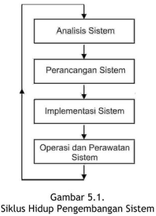

A. TAHAPAN-TAHAPAN DI SDLC
Tahapan-tahapan dalam metode SDLC adalah sebagai berikut ini.
- Analisis sistem (system analysis)
- Studi pendahuluan.
- Studi kelayakan.
- Mengidentifikasi permasalahan dan kebutuhan pemakai.
- Memahami sistem yang ada.
- Menganalisis basil penelitian.
- Perancangan sistem (system design)
- Perancangan awal.
- Perancangan rinci.
- Implementasi sis tern (system implementation)
- Operasi dan perawatan sistem (system operation and maintenance)
Siklus atau daur hidup pengembangan sistem tampak jika sistem yang
sudah dikembangkan dan dioperasikan tidak dapat dirawat lagi sehingga
dibutuhkan pengembangan sistem kembali yang tampak di gambar berikut:

- Analisis Sistem
- Tahap awal dari SDLC adalah analisis sistem (system analysis). Tahap
ini dilakukan oleh analis sistem (system analyst).
- Analis sistem (system analyst) adalah orang yang dididik khusus untuk mengembangkan sistem secara profesional.
- Alasan menggunakan analis sistem di metode SDLC
adalah karena metode ini digunakan untuk mengembangkan sistem teknologi
informasi yang kompleks.
- STI yang kompleks perlu dianalisis oleh orang
yang ahli di bidangnya sehingga permasalahan dapat dipecahkan dan
kebutuhan pemakai sistem dapat diidentifikasi dengan benar.
Tahap di analisis sistem terdiri dari kegiatan-kegiatan sebagai berikut ini:
- Studi pendahuluan
Kegiatan awal dari analisis sistem adalah studi awal atau studi
pendahuluan tentang jenis, ruang lingkup, dan pemahaman awal dari proyek
pengembangan STI ini. Dari studi pendahuluan ini dapat diperoleh hasil
pemahaman sistem secara awal, perkiraan biaya yang dibutuhkan, dan waktu
yang diperlukan untuk pengembangan STI ini.
- Studi kelayakan
Setelah studi pendahuluan dilakukan, langkah berikutnya yang
diperlukan oleh analisis sistem adalah melakukan studi kelayakan (feasibility study). Studi kelayakan (feasibility study) terdiri dari lima macam kelayakan
yang disebut dengan TELOS.
Studi kelayakan (feasibility study)
TELOS:
Teknologi
Ekonomi
Legal
Operasi
Sosial
Kelayakan ekonomis
- Jika manfaat dari STI lebih besar dari biaya-biayanya dan dana yang dibutuhkan tersedia.
- Manfaat-manfaat berujud (tangible benefits): manfaat yang langsung dapat diukur dengan nilai uang – > spt penurunan biaya persediaan, manfaat penurunan biaya operasi, manfaat penurunan biaya alat tulis, manfaat peningkatan penjualan.
- Manfaat-manfaat tidak berujud (intangible benefits): manfaat yang tidak langsung dapat diukur dengan nilai uang– > spt. manfaat peningkatan pengambilan keputusan manajemen, manfaat peningkatan kepuasan pelanggan, manfaat peningkatan moral pekerja.
- Perancangan Sistem
- Tahap perancangan sistem mempunyai dua tujuan utama, yaitu sebagai berikut ini.
- Memberikan gambaran secara umum tentang kebutuhan informasi
kepada pemakai sistem secara logika.
- Memberikan gambaran yang jelas dan rancang bangun yang lengkap
kepada pemrogram komputer dan ahli-ahli teknik lainnya.
- Tujuan perancangan sistem yang pertama lebih dikenal dengan istilah
perancangan sistem secara logika (logical system design) atau perancangan
sistem secara umum (general system design).
- Tujuan perancangan sistem yang kedua lebih dikenal dengan istilah perancangan sistem secara terinci (detail system design).
- Implementasi Sistem
Tahap berikutnya setelah sistem selesai di rancang dan dibangun adalah
tahap implementasi sistem. Implementasi sis tern (system implementation)
adalah tahap meletakkan sistem supaya siap dioperasikan.
Tahap implementasi sistem terdiri dari beberapa kegiatan sebagai berikut:
- Mempersiapkan rencana implementasi.
- Melakukan kegiatan implementasi
- Memilih dan melatih personil.
- Memilih dan mempersiapkan tempat dan lokasi sistem.
- Mengetes sistem.
- Melakukan konversi sis tern.
- Menindaklanjuti implementasi.
Konversi Sistem
- konversi paralel (parallel conversion)
- konversi pilot (pilot conversion) atau konversi lokasi (location conversion)
- konversi bertahap (phasing conversion atau staged conversion)
- konversi langsung (direct conversion atau direct cut over).
- Operasi dan Perawatan Sistem
Setelah sistem diimplementasikan dengan berhasil, sistem akan
dioperasikan dan dirawat. Tahap ini disebut dengan operasi dan perawatan
sistem (system operation and maintenance). Sistem perlu dirawat karena
beberapa hal, yaitu sebagai berikut ini.
- Sistem mengandung kesalahan yang dulunya belum terdeteksi sehingga
kesalahan-kesalahan sistem perlu diperbaiki.
- Sistem mengalami perubahan-perubahan karena permintaan baru dari
pemakai sistem.
- Sistem mengalami perubahan karena perubahan lingkungan luar.
- Sistem perlu ditingkatkan.
B. KELEBIHAN DAN KEKURANGAN METODE SDLC
Metode SDLC mempunyai beberapa kelebihan dan kekurangan.
Kelebihan-kelebihan dari metode ini adalah sebagai berikut ini.
- Menyediakan tahapan yang dapat digunakan sebagai pedoman
mengembangkan sistem.
- Akan memberikan basil sistem yang lebih baik karena sistem dianalisis
dan dirancang secara keseluruhan sebelum diimplementasikan.
Kekurangan-kekurangan dari metode ini adalah sebagai berikut.
- Hanya menyediakan tahapan-tahapan saja, tetapi tidak menyediakan
metodologi (cara dan alat-alat) untuk mengembangkan sistem sebingga
harus digabungkan dengan metodologi yang ada yaitu misalnya metodologi pengembangan sistem terstruktur.
- Hasil dari SDLC sangat tergantung dari basil di tahap analisis sehingga
jika terdapat kesalaban analisis, akan terbawa terus dengan hasil sistem
yang kurang memuaskan.
- Dibutuhkan waktu yang lama untuk mengembangkannya karena sistem
harus dikembangkan sampai selesai semua terlebib dahulu.
- Dibutuhkan biaya yang relatif lebih besar dibandingkan dengan metode
lainnya.
- Hasil dari sistem tidak luwes untuk dimodifikasi karena perlu dilakukan
analisis kembali.